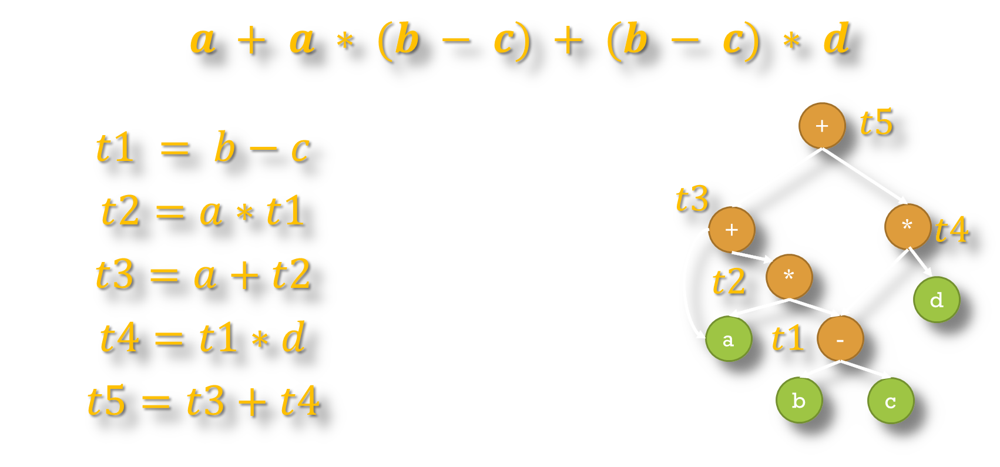
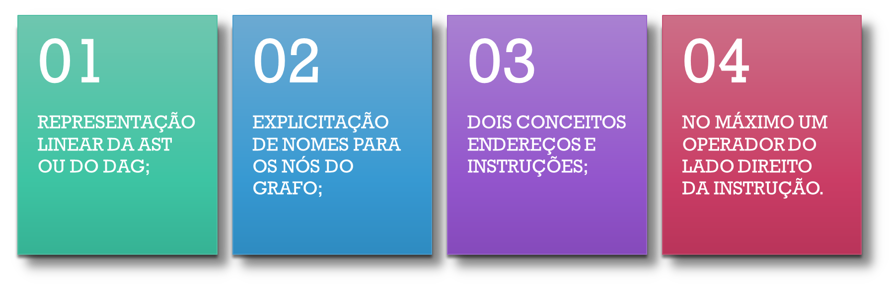
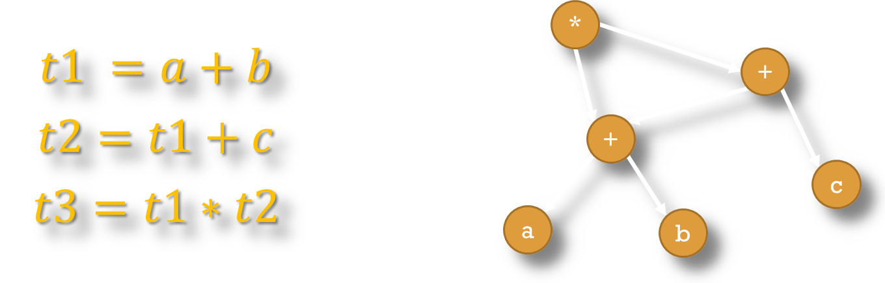
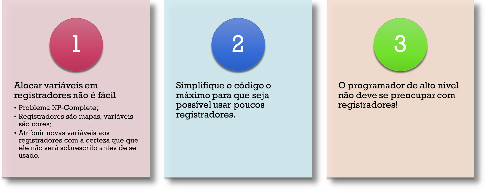
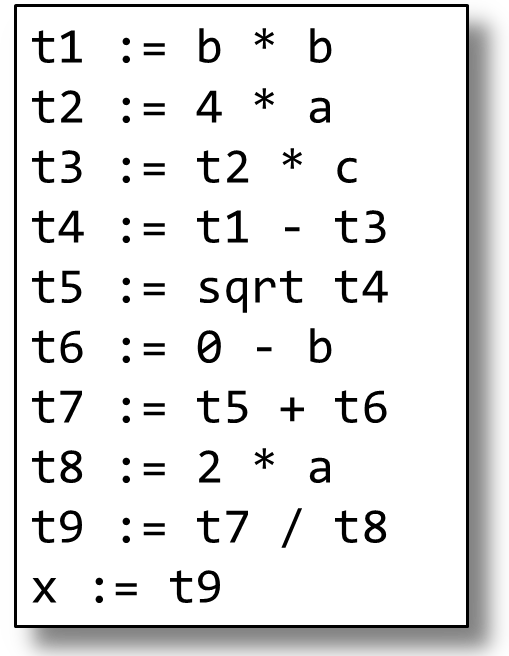
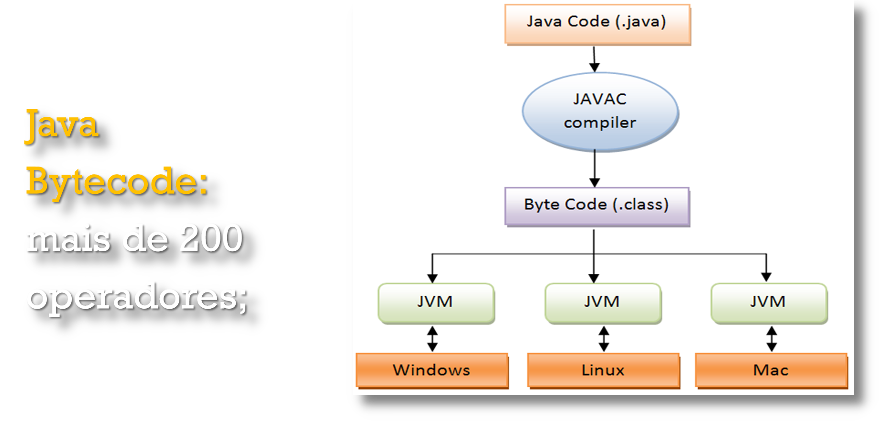
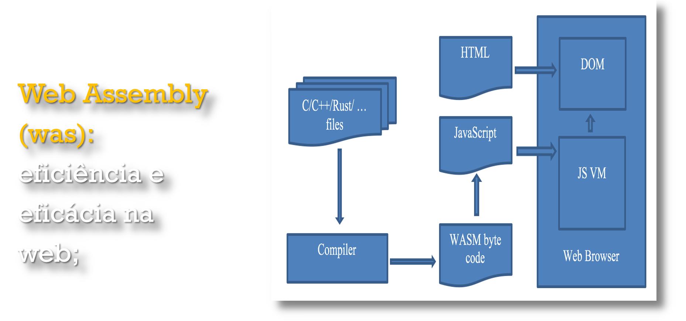

Geração de Código Intermediário
Frank Coelho de Alcantara -2021

Representação Intermediária - RI
Tarefas da RI
Realiza otimizações de Código independente da máquina trabalhando em partes onde não precisamos nos preocupar com registradores, e posições de memória.
O Código Gerado é uma representação simplificada da árvore gerada pela análise semântica. Uma versão limpa, geralmente linear, mas que contém todas as caracterÁsticas do algoritmo criado.
Este código intermediário já contém um nÁvel significativo de otimizações.
O código intermediário é, geralmente, independente da arquitetura alvo.
Independência
Representação
CaracterÁsticas
Otimização High-Level
Otimização Mid-Level

Otimização Low-Level

Valores

Tecnologias
Árvore Sintática Abstrata
Direct Acyclic Graphs

Comparação DAG - AST

DAG - Prática
Considere a declaração, $( ğ‘ + ğ‘ )∗ ( ğ‘ + ğ‘ + ğ‘ )$ e construa o DAG equivalente.
Blocos Básicos

Blocos Básicos - Exemplo
Blocos Básicos - Fluxo

Representação Linear

Máquinas de Pilha - LIFO
Criadas no final dos anos 1950 pela Burroughs. A única empresa na história que concorreu com a IBM.
Não usam registradores, todas as instruções estão armazenadas em uma pilha quando um operador chega a pilha, seus operandos já estão lá e o resultado é armazenado novamente na pilha.
Uma das máquinas derivada da arquitetura de Von Neumann. As outras são Máquinas de Acumulador e de Registradores.
É a arquitetura mais comum para implementação de interpretadores. O Java, o Python (CPython) e o WebAssembly usam variações desta tecnologia.
Também conhecida como one address code.
Three Address Code
O gerador de código intermediário recebe uma AST originada no analisador semântico e converte esta árvore em uma representação linear. Esta representação é chamada de 3-Address code, 3AC e é construÁda com base nos conceitos de endereços e instruções. Um endereço pode ser um nome, uma constante ou temporário.
Seu código começa a ficar parecido com código de máquina.
3AC - Formato
Todas as instruções terão a forma: $𝑥 := \text{ }ğ‘¦\text{ } 𝑜𝑝\text{ } 𑧠$ com no máximo um operador no lado direito do $:=$;
Logo são validos: $𝑥 := ğ‘¦\text{ } 𝑜𝑝\text{ } 𑧠$ ; $𝑥 := 𝑜𝑝\text{ } 𑧠$ e $𝑥 := 𑦠$.
Expressões complexas de código serão transformados em sequencias de comandos em 3AC
Veremos que em algumas gramáticas existe uma sintaxe com regras de produção na forma de quadruplas: $𝑜𝑝,\text{ } arg1, \text{ }arg2, \text{ }ğ‘Ÿğ‘’ğ‘ ğ‘¢ğ‘™ğ‘¡$.
3AC - Otimização 1
3AC - Exemplo
3AC - Resumo
3AC - ExercÁcio
Considere $( ğ‘ + ğ‘ )∗( ğ‘ + ğ‘ + ğ‘ )$ e construa seu DAG e um conjunto de instruções usando o 3AC.
Registradores
A distribuição de valores em registradores é um problema NP-Complete.
3AC-Quadruplas
3AC-Triplas
3AC-Triplas Indiretas
3AC-Triplas Exemplo
Considere a expressão: $𝑥 = (−𝑏 + ğ‘ ğ‘ğ‘Ÿğ‘¡(ğ‘^2 − 4∗𝑎∗𝑐)) / (2∗𝑎)$ e crie o 3AC equivalente.
Na Prática - Java
Na Prática - Webassembly
Pequena Revisão
Você pode, e deve, fazer uma revisão dos seus conhecimentos clicando aqui
Material de apoio
Você pode baixar o material de apoio clicando aqui
Referências
AHO, A. V. et al. Compiladores: princÁpios, técnicas e ferramentas. 2º. ed. Boston, MA, USA: Pearson Education Inc. , 2007.
Appel, Andrew W. Modern Compiler Implementation in Java, 2nd ed. Cambridge, 2002. (Editions in ML and C also available; the “tiger books”)
CASS, S. The 2016 Top Programming Languages. IEEE Spectrum, 2016. DisponÁvel em:
Grune, Dick, Henri E. Bal, Ceriel J.H. Jacobs, and Koen G. Langendoen. Modern Compiler Design. Wiley, 2000
Hogg, Jim. CSE-P501 Compilers. Washington University, 2005